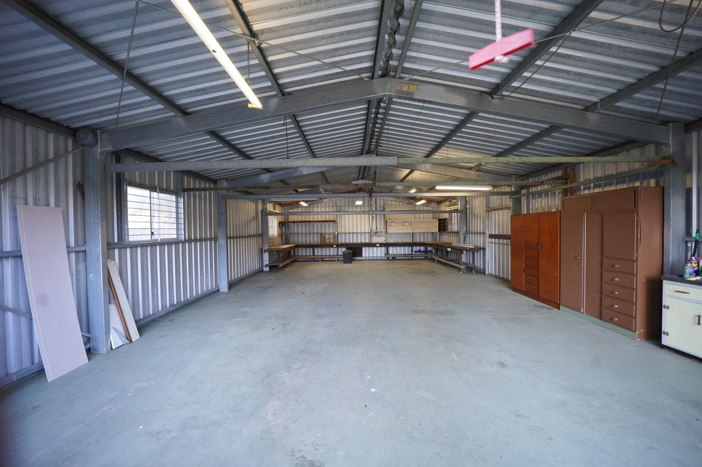
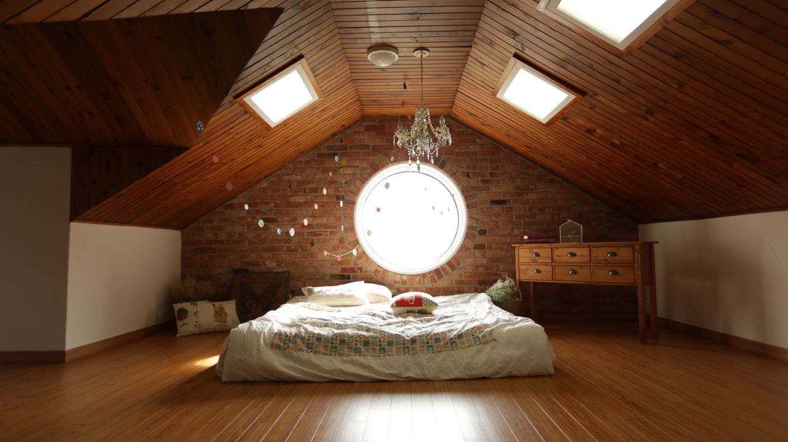
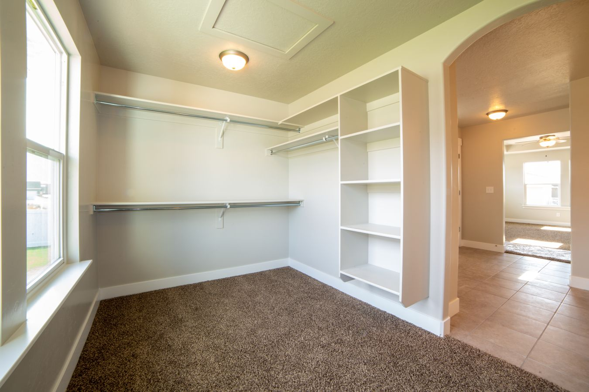

General renovation article. Reno Rise focuses on basement renovations and legal secondary suites. Dollar figures and timelines in this article are illustrative planning ranges from general industry information. They are not quotes, may be out of date, and have not been independently verified by Reno Rise. Get itemized quotes for your own project, and see our basement cost guide.
Quick answer: deck renovation cost in the GTA runs $6,000 to $25,000+, while an attic or garage conversion runs $8,000 to $70,000 depending on scope. Below are illustrative ranges for the rooms homeowners commonly ask about, room by room, not blended into one misleading average.
"How much does a renovation cost?" is the wrong question if you're only doing one room. A deck renovation and an attic conversion share a budget category on nobody's spreadsheet but a spammy calculator's, and pricing them the same way is how homeowners end up either overpaying or getting blindsided halfway through demo.
Here's what each room actually costs in the GTA, and why the gap between them is bigger than most guides admit.
Why Renovation Cost Varies So Much by Room
Rooms cost differently to renovate for one simple reason: some involve plumbing, electrical, and structural work, and some don't. A deck renovation cost is driven almost entirely by material choice and square footage. An attic or basement renovation cost is driven by whether the space already meets ceiling-height and egress requirements — because if it doesn't, you're paying for structural changes before a single finish gets picked.

Photo by Kevin Chuang on Pexels
Deck Renovation Cost
Deck renovation cost in the GTA typically runs $6,000 to $14,000 for resurfacing or rebuilding a standard pressure-treated wood deck at an existing footprint. Upgrading to composite or PVC decking, adding built-in seating, glass railings, or a pergola pushes the range to $14,000 to $25,000+. Composite costs more upfront but skips the annual staining that wood decks need to survive a GTA winter — the trade-off is maintenance cost, not durability.
Attic Renovation Cost
A basic attic renovation — insulation upgrade, drywall, flooring, and a simple bedroom conversion — runs $25,000 to $45,000. A full loft conversion with a dormer addition, skylights, and an ensuite bathroom climbs to $45,000 to $70,000 or more. The number one cost driver isn't finishes, it's headroom: if your attic doesn't already clear the minimum ceiling height for a habitable room, raising the roofline turns a renovation into a structural project.

Photo via Pexels
Garage Renovation Cost
Garage renovation cost depends on whether you're finishing it or converting it. A basic finish — drywall, flooring, insulation, and built-in storage while keeping the garage door — runs $8,000 to $20,000. Converting the space into heated living area, a home gym, or an in-law suite (which usually means removing or permanently sealing the garage door and adding proper insulation and heating) runs $20,000 to $45,000, and may require a permit if it changes the home's habitable square footage.
Bedroom & Closet Renovation Cost
A bedroom renovation with new flooring, paint, trim, and lighting — no layout change — runs $4,000 to $12,000. A walk-in closet build-out with custom shelving, drawers, and lighting runs $3,000 to $9,000 depending on materials, and is one of the highest-satisfaction, lowest-disruption renovations a GTA homeowner can do in under a week.

Photo by Michael Gault on Pexels
Basement & Cellar Renovation Cost
Most GTA basement renovations run $25,000 to $160,000. A basic finished shell — framing, insulation, drywall, and flooring with no bathroom — lands around $25,000-$45,000. A mid-range renovation adding a bedroom and full bathroom typically runs $55,000-$85,000. Older cellars with low ceilings or active moisture need waterproofing and sometimes underpinning before finishes are even discussed, which is why cellar renovation cost quotes vary so much more than any other room on this list.
Which Room Renovation Pays You Back?
Basement and deck renovations tend to return the most relative to what you spend, often 70-90%, because they add usable living or outdoor square footage without touching a home's most expensive systems. Attic and garage conversions return less on average, closer to 50-65%, since a finished attic or converted garage appeals to a narrower pool of future buyers than a finished basement does.
Frequently Asked Questions
How much does a deck renovation cost in the GTA?
A deck renovation typically runs $6,000-$14,000 for resurfacing or rebuilding a pressure-treated wood deck, and $14,000-$25,000+ for composite or PVC decking with built-in seating or a pergola.
How much does an attic renovation cost in the GTA?
A basic attic renovation with insulation, drywall, and a simple bedroom conversion runs $25,000-$45,000. A full loft conversion with a dormer addition and ensuite bathroom can run $45,000-$70,000 or more.
How much does a garage renovation cost in the GTA?
A basic garage renovation with drywall, flooring, and storage runs $8,000-$20,000. Converting a garage into heated living space, a gym, or an in-law suite runs $20,000-$45,000.
How much does a bedroom or closet renovation cost?
A bedroom refresh with new flooring, paint, trim, and lighting runs $4,000-$12,000. A walk-in closet build-out with custom shelving runs $3,000-$9,000 depending on materials.
How much does a basement or cellar renovation cost?
Most GTA basement renovations run $25,000-$160,000. A basic finished shell lands around $25,000-$45,000. A mid-range renovation with a bedroom and full bathroom typically runs $55,000-$85,000.
Which room renovation has the best return on investment?
Basement and deck renovations tend to return the most relative to their cost, often 70-90%, because they add usable living or outdoor space without touching a home's most expensive systems.
Explore related cost guides and services: